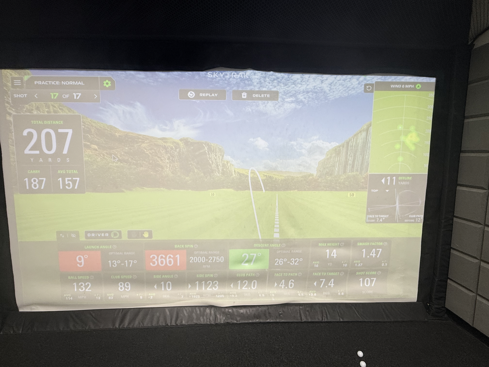
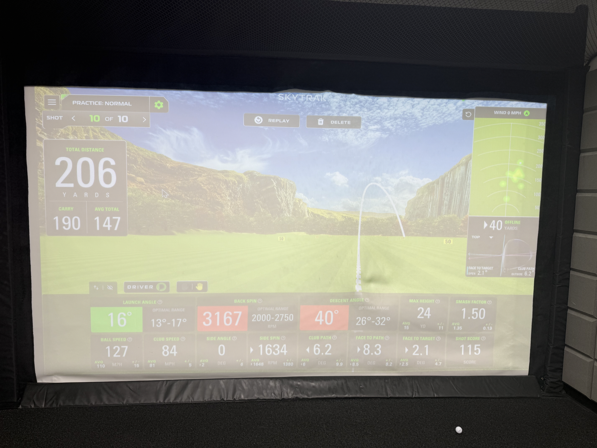
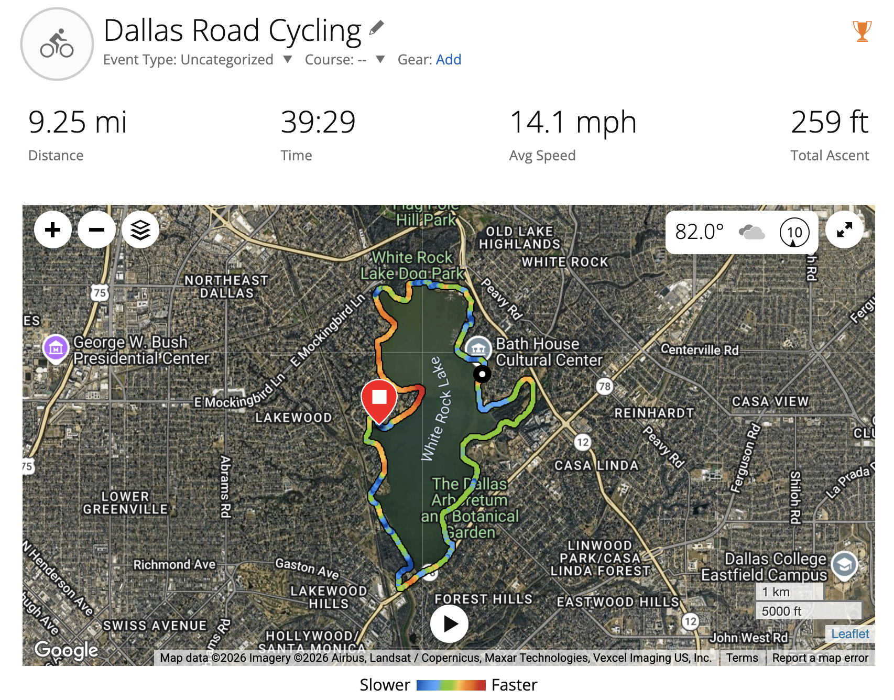
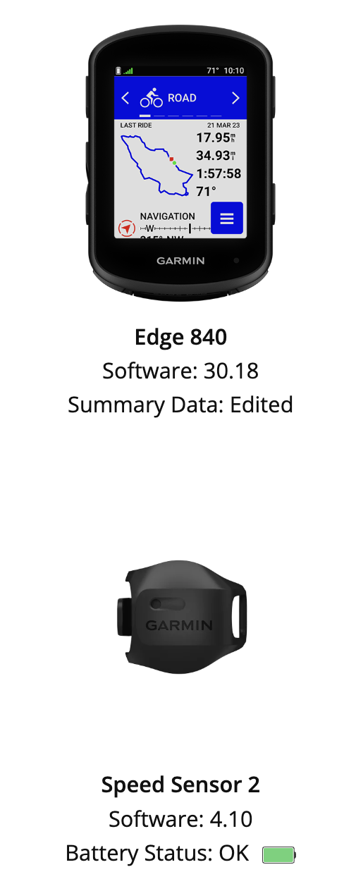
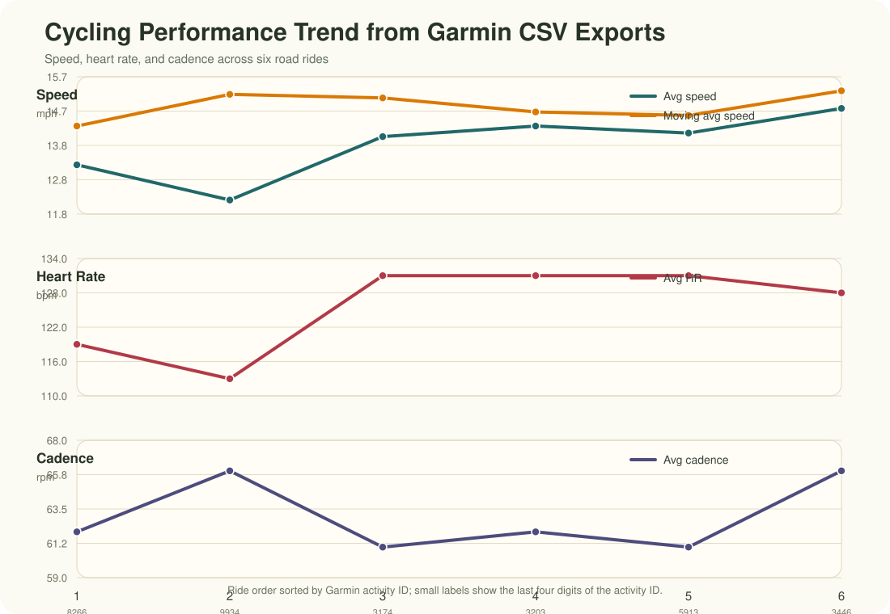
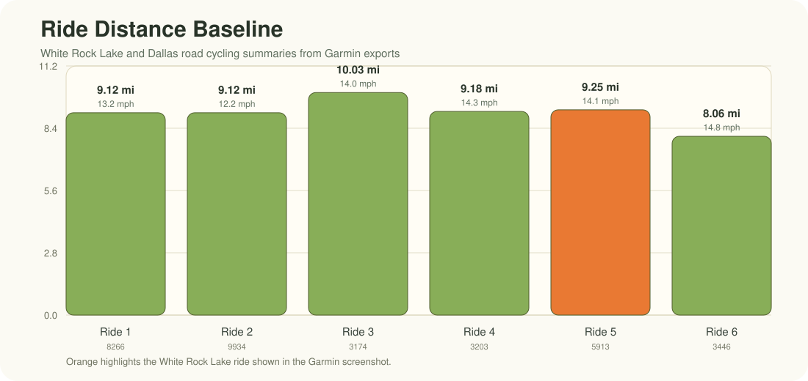
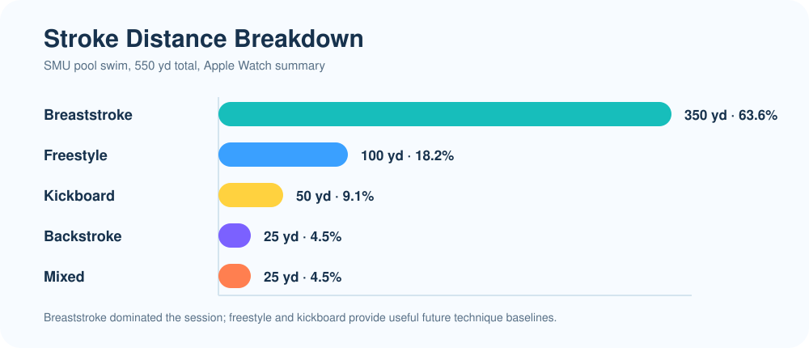
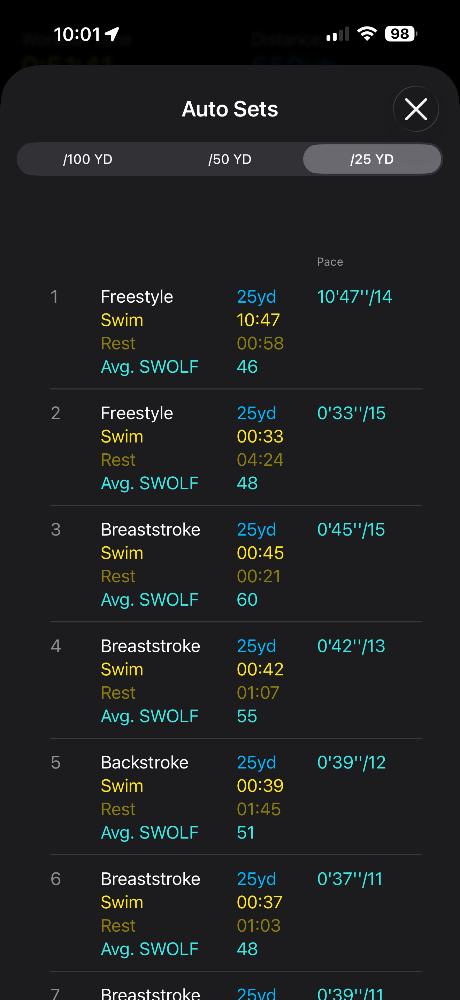
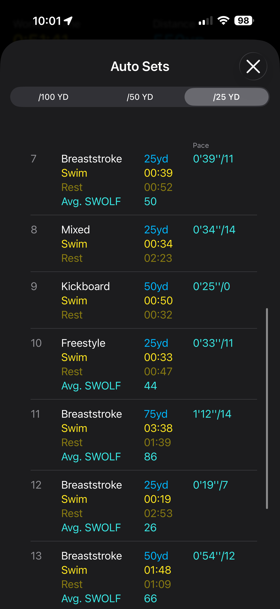
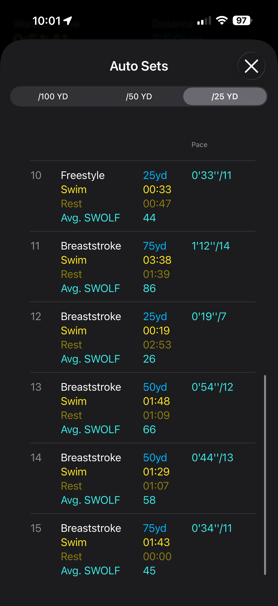

Sports Analytics
This page tracks my sports practice data, equipment, and performance analytics over time. The goal is to turn practice into usable feedback: what I shot, what changed, what patterns appeared, and what I should focus on next.
Current Focus
My first tracking area is Olympic recurve archery. I want to record each practice session in a consistent format so I can later analyze score trends, end-by-end consistency, arrow distribution, grouping patterns, and the effects of equipment or technique changes.
Current Olympic Recurve Setup

| Component | Current setup | Why it matters |
|---|---|---|
| Riser | Hoyt Formula XD 25” riser | Competition-oriented Olympic recurve platform using the Formula limb system. |
| Limbs | Hoyt RCRV Podium Formula Recurve Limbs, long, 28 lb | Long limbs on a 25” riser create an approximately 70” bow with a smoother draw cycle and more forgiving target-shooting feel. |
| Sight | Axcel Achieve XP Pro Sight | Precision sight system for repeatable Olympic recurve aiming and sight-mark tracking. |
| Stabilizers | WNS stabilizers | Helps improve aiming steadiness, bow balance, and shot reaction consistency. |
| Clicker | AAE Extended Clicker | Supports consistent draw length, expansion, shot timing, and reduced collapse through the shot. |
| Bow stringer | Selway LimbSaver Recurve Stringer, hunter green | Protects the limbs and reduces risk of twist or unsafe stringing. |
| Configuration | Olympic recurve, Formula limb system | Current setup is built for structured target practice and future competition-style training. |
Why the 28 lb Setup Is Useful
The 28 lb limb setup is a good training choice because it prioritizes clean form over raw draw weight. For Olympic recurve, especially while refining alignment, back tension, expansion, clicker control, and shot timing, a smoother and more manageable setup can lead to better long-term scores than struggling with excessive poundage.
This setup should help me:
- Shoot more arrows per session with less shoulder fatigue.
- Build repeatable expansion through the clicker.
- Improve holding stability and sight picture quality.
- Reduce form breakdown late in practice.
- Increase poundage gradually only after technique becomes consistent.
Equipment and Tuning Watchlist
These are the next setup variables I should track or confirm as my practice becomes more data-driven:
- Plunger/button model and setting.
- Arrow rest.
- Arrow spine, length, point weight, and fletching.
- Finger tab and anchor consistency.
- Brace height.
- Nocking point height.
- Tiller and limb alignment.
- Stabilizer balance.
- Sight marks by distance.
Practice Log
All currently logged archery sessions used a 20-yard distance and a Standard Archery Target 40cm 10 Ring Bow and Arrow Target.
| Date | Time | Session | Distance | Target / app label | Ends | Arrows | Reported score | Standard 10-ring score | Avg / Arrow | X |
|---|---|---|---|---|---|---|---|---|---|---|
| 2026-05-23 | 3:36 PM | Scorecard app screenshot | 20 yd | 40cm 10-ring target | 6 | 36 | 283 | 283 / 360 (78.6%) | 7.86 | 0 |
| 2026-05-23 | 4:29 PM | Custom-(Lancaster): Preston Leon | 20 yd | 40cm LAS Indoor | 10 | 30 | 237 | 236 / 300 (78.7%) | 7.87 | 1 |
| 2026-05-23 | 5:23 PM | Custom-(WA, Metric): Preston Leon 2 | 20 yd | 40cm WA Target | 3 | 9 | 70 | 70 / 90 (77.8%) | 7.78 | 0 |
Download archery practice CSV View 4:29 PM scorecard PDF View 5:23 PM scorecard PDF
Sight Setup Log
The sight setting below was used for the May 23, 2026 practice data at 20 yards. Because the close-up photos preserve the sight geometry better than the small printed dial marks, I am treating the images as the official setup record and only recording numeric values when they can be read clearly.
May 23, 2026 sight mark: Axcel Achieve XP Pro Sight, 20 yards, Standard Archery Target 40cm 10 Ring Bow and Arrow Target. From the closer photos, the side reference scale reads approximately 5.5 visible tick marks, the windage dial appears between 7 and 8 and closest to about 7.8, and the blue sight-head reference marks appear near the center index. These are photo-based readings, so I should confirm the exact manufacturer units/click values at the range.
| Field | May 23 setup record | Confidence |
|---|---|---|
| Distance | 20 yards | Confirmed |
| Target face | Standard Archery Target 40cm 10 Ring Bow and Arrow Target | Confirmed |
| Sight | Axcel Achieve XP Pro Sight | Confirmed from setup |
| Side reference scale | Approximately 5.5 visible tick marks on the close side scale |
Approximate from close-up |
| Windage dial | Between 7 and 8, closest to about 7.8 on the visible gray dial |
Approximate from close-up |
| Windage center index | Blue sight-head reference marks appear close to the center / long middle mark | Photo reference |
| Elevation | Main vertical elevation bar number is not visible in these close-ups; keep the photo set as the current reference and confirm the exact elevation mark next session | Needs range confirmation |
| Aperture position | Aperture mounted on the threaded rod to the archer’s right of the blue sight block | Photo reference |
Download archery sight settings CSV


2026-05-23 Scorecard-Style Breakdowns
The tables below follow the PDF scorecard structure: each row is one end, each arrow score is shown separately, Total is the end total, and Score is the cumulative running score.
Score color key: X/10/9 8/7 6/5 4/3 2/1
3:36 PM Scorecard App Screenshot
| Distance #1: 20yd (40cm 10 Ring Target) | |||||||||
|---|---|---|---|---|---|---|---|---|---|
| End | 1 | 2 | 3 | 4 | 5 | 6 | Avg. | Total | Score |
| 1 | 9 | 9 | 9 | 8 | 8 | 6 | 8.17 | 49 | 49 |
| 2 | 9 | 9 | 8 | 8 | 6 | 2 | 7 | 42 | 91 |
| 3 | 9 | 10 | 9 | 9 | 5 | 9 | 8.5 | 51 | 142 |
| 4 | 9 | 10 | 9 | 7 | 7 | 6 | 8 | 48 | 190 |
| 5 | 9 | 9 | 8 | 7 | 8 | 6 | 7.83 | 47 | 237 |
| 6 | 9 | 9 | 7 | 8 | 7 | 6 | 7.67 | 46 | 283 |
4:29 PM Custom-(Lancaster): Preston Leon
This table follows the attached Lancaster PDF format. The official scorecard reports 237 because this Lancaster-style scorecard counts X as 11. For standard 10-ring comparison, the equivalent is 236 / 300.
| Distance #1: 20yd (40cm LAS Indoor) | ||||||
|---|---|---|---|---|---|---|
| End | 1 | 2 | 3 | Avg. | Total | Score |
| 1 | 8 | 6 | 7 | 7 | 21 | 21 |
| 2 | 6 | 6 | 6 | 6 | 18 | 39 |
| 3 | 9 | 9 | 9 | 9 | 27 | 66 |
| 4 | 6 | 7 | 6 | 6.33 | 19 | 85 |
| 5 | 9 | 8 | 8 | 8.33 | 25 | 110 |
| 6 | 10 | 8 | 9 | 9 | 27 | 137 |
| 7 | 9 | 8 | 7 | 8 | 24 | 161 |
| 8 | 9 | 9 | 7 | 8.33 | 25 | 186 |
| 9 | 8 | 8 | 8 | 8 | 24 | 210 |
| 10 | X | 8 | 8 | 9 | 27 | 237 |
| Distance #1 Totals - Skill: 59.7 | |||||||
|---|---|---|---|---|---|---|---|
| Xs | 10s | 9s | Arrow Avg. | Avg. End | Score | Gold | Xs+10s |
| 1 | 1 | 8 | 7.9 | 23.7 | 237 | 33.33% | 2 |
5:23 PM Custom-(WA, Metric): Preston Leon 2
| Distance #1: 20yd (40cm WA Target) | ||||||
|---|---|---|---|---|---|---|
| End | 1 | 2 | 3 | Avg. | Total | Score |
| 1 | 9 | 7 | 7 | 7.67 | 23 | 23 |
| 2 | 9 | 8 | 7 | 8 | 24 | 47 |
| 3 | 9 | 7 | 7 | 7.67 | 23 | 70 |
| Distance #1 Totals - Skill: 56.9 | |||||||
|---|---|---|---|---|---|---|---|
| Xs | 10s | 9s | Arrow Avg. | Avg. End | Score | Gold | Xs+10s |
| 0 | 0 | 3 | 7.78 | 23.33 | 70 | 33.33% | 0 |
Shooting Distribution Pattern


May 23 Cumulative Analytics
Standard score
589 / 750
Average arrow
7.85
Total arrows
75
Gold-ring arrows
30 / 75
Standard 10-ring score distribution across the May 23 data:
| Score value | Count | Share of arrows |
|---|---|---|
| X | 1 | 1.3% |
| 10 | 3 | 4.0% |
| 9 | 26 | 34.7% |
| 8 | 18 | 24.0% |
| 7 | 14 | 18.7% |
| 6 | 11 | 14.7% |
| 5 | 1 | 1.3% |
| 2 | 1 | 1.3% |
Early read:
- Across 75 logged arrows at 20 yards, the standard 10-ring equivalent score is 589/750, or 78.5%.
- The three sessions were consistent by percentage: 78.6%, 78.7%, and 77.8%.
- Gold-ring scoring is the current strength: 30 of 75 arrows were X, 10, or 9.
- The main opportunity is reducing low outliers: 13 of 75 arrows were 6 or lower, including one 2 from the first scorecard screenshot.
- The 4:29 PM scorecard had no misses and a strong official skill rating of 59.7, but it also showed several 6s, so the next quality jump should come from lifting the floor rather than chasing only more 10s.
- The target plots suggest a mild left-side grouping tendency plus occasional low-right outliers; I should confirm this across multiple sessions before changing tuning.
Future Data Fields
For each future archery practice, I should record:
- Date, time, location, distance, target face, indoor/outdoor conditions.
- Bow setup, limb weight, arrows, plunger setting, brace height, and sight mark.
- Sight photos or exact sight numbers: horizontal extension, elevation, windage, aperture/pin position, and any click changes.
- End-by-end score and raw arrow scores.
- X count, 10 count, 9+ count, and low-arrow count.
- Notes about form, clicker behavior, aiming stability, fatigue, and mental focus.
- A target screenshot or photo when available.
Next Practice Goal
For the next several sessions, the priority is not only increasing the total score. The first goal is reducing the low outlier arrows while preserving the number of 9s and 10s. A practical target is to keep all arrows at 6 or higher, then push toward all arrows at 7 or higher.
May 22, 2026 Simulator Practice
This session records my driver practice at Royal Golf Zone on Friday, May 22, 2026 at 6:00 PM. The screenshots contain 30 unique visible driver shots. I use two views of the data:
- Raw visible shots: all 30 transcribed shots from the screenshots.
- Full-contact subset: 23 shots with carry at least 150 yards and ball speed at least 100 mph, so obvious mishits or simulator misreads do not dominate the analytics.
Download visible driver shot CSV
| Field | Session record |
|---|---|
| Date and time | 2026-05-22, 6:00 PM |
| Venue | Royal Golf Zone |
| Practice type | Indoor golf simulator |
| Club | Driver |
| Visible shots recorded | 30 |
| Full-contact shots analyzed | 23 |
| Units | mph, rpm, yards, degrees |
Driver Snapshot
Best total distance
230 yd
Best carry
217 yd
Avg. full-contact distance
206.2 yd
Avg. full-contact carry
192.2 yd
Avg. full-contact ball speed
122.0 mph
Avg. full-contact club speed
86.3 mph
200+ yd total distance
17 / 23
210+ yd total distance
10 / 23
Top Recorded Driver Shots
| Shot | Ball speed | Club speed | Carry | Distance | Side angle | Launch / height | Club path | Note |
|---|---|---|---|---|---|---|---|---|
| 31 | 133.2 mph | 94.2 mph | 217 yd | 230 yd | -4.9 deg | 13.4 deg | -6.9 deg | Best visible carry and total distance |
| 38 | 129.6 mph | 91.7 mph | 213 yd | 226 yd | -2.4 deg | 15.0 deg | -2.1 deg | Strong long drive |
| 39 | 126.9 mph | 89.7 mph | 210 yd | 222 yd | -0.1 deg | 17.0 deg | 0.0 deg | Best start-line control among long shots |
| 49 | 126.0 mph | 89.1 mph | 205 yd | 218 yd | -3.9 deg | 14.5 deg | 0.0 deg | Solid carry and direction |
| 8 | 127.2 mph | 90.0 mph | 204 yd | 217 yd | -6.0 deg | 12.5 deg | -12.1 deg | Good speed with left-side tendency |
| 26 | 128.2 mph | 90.6 mph | 204 yd | 216 yd | -6.0 deg | 12.8 deg | -19.1 deg | Strong speed, path needs cleanup |
| 55 | 126.2 mph | 89.2 mph | 201 yd | 215 yd | -9.8 deg | 12.3 deg | -2.7 deg | Good power, left start |
| 62 | 122.2 mph | 86.4 mph | 202 yd | 215 yd | 2.1 deg | 19.3 deg | 0.0 deg | High launch with straight path reading |
Performance Read
- My current driver ceiling is encouraging: the best visible shot reached 230 yards total distance and 217 yards carry, with 133.2 mph ball speed and 94.2 mph club speed.
- The full-contact average was 206.2 yards total distance and 192.2 yards carry, which is a useful baseline for future simulator sessions.
- Contact consistency is the biggest near-term opportunity. Seven visible shots were excluded from the clean subset because they were obvious mishits, weak contacts, or simulator misreads.
- Direction control trends slightly left on the clean shots: 15 of 23 full-contact shots had negative side angle, and the average side angle was -2.2 degrees.
- Several strong shots also showed large negative club-path readings, especially shots 52, 48, 50, 23, and 26. The next practice goal should be narrowing club path and start line before chasing more raw speed.
- Launch/height on full-contact shots averaged 14.2 degrees, with average backspin around 2,740 rpm. That is a usable driver window, but reducing side-spin volatility should improve dispersion.
Next Golf Practice Goals
- Keep at least 80% of driver shots above 150 yards carry.
- Keep full-contact side angle inside +/-5 degrees.
- Keep club path inside +/-5 degrees on more swings.
- Track whether misses are mostly left-starting, slicing/fading, or contact-related.
- Record the same metrics by club once I begin practicing irons, wedges, and putting.
Impact and Ball Flight Fundamentals
These notes are my working reference for understanding launch-monitor data. I want to connect every simulator number to one of two questions: Did I create enough energy? and Did I deliver the club in a way that sent the ball where I intended?
Core model: distance comes first from ball speed, then gets shaped by launch angle, spin rate, descent angle, and ground conditions. Direction starts mostly from where the face is pointed at impact, while curve comes from the face-to-path relationship, centeredness of strike, spin axis, and gear effect.
1. Distance
MAXIMIZING DISTANCE
Distance is not just swing speed. It is the final result of ball speed, smash factor, launch angle, spin rate, carry, descent angle, and bounce/roll. For driver practice, I should first raise the floor: more solid contacts above 150 yd carry, then push ball speed and optimize launch/spin.
2. Smash Factor
SMASH FACTOR FUNDAMENTAL
Smash factor is ball speed / club speed. It measures energy transfer at impact. My May 22 clean-driver average was about 122.0 / 86.3 = 1.41, while my GolfTech best shots reached 1.47 and 1.50. A low smash number usually points to off-center contact, poor face control, or too much spin loft.
3. Spin Rate
SPIN RATE FUNDAMENTAL
Spin rate is the total backspin that helps the ball stay in the air but can also cost distance if it is too high. My Royal Golf Zone full-contact average was about 2,740 rpm, while one GolfTech best shot showed 3,661 rpm, which likely explains why that 207 yd shot had good speed but a lower, spinny flight.
4. Launch Angle
LAUNCH ANGLE FUNDAMENTAL
Launch angle is the vertical angle the ball leaves the clubface. My Royal Golf Zone clean-driver average was about 14.2 deg, which is a useful window. The GolfTech 207 yd shot launched at 9 deg, probably too low for maximizing carry; the 206 yd shot launched at 16 deg, which produced better carry but still needs dispersion control.
5. Launch Direction
LAUNCH DIRECTION FUNDAMENTAL
Launch direction is the horizontal start line. For my data, the side angle is the practical proxy: negative values started left, positive values started right. My full-contact average side angle was about -2.2 deg, so my current driver pattern trends slightly left. A useful near-term goal is keeping start line inside +/-5 deg.
6. Club Path
SWING DIRECTION - CALCULATOR
Club path is where the clubhead is moving horizontally through impact. Negative values in my simulator data suggest out-to-in / leftward delivery. A rough swing-direction checkpoint is: if launch direction and club path are both left, I need to check alignment and path; if launch starts left but curves right, face-to-path is probably open.
7. Spin Axis 1
SPIN AXIS 1 CALCULATOR
A useful approximation is spin-axis proxy = atan(side spin / backspin). Example: shot 52 had 1389 rpm side spin and 2816 rpm backspin, which gives about 26 deg of axis tilt - a big curve signal. Shot 62 had 0 side spin, so the proxy is near 0 deg.
8. Spin Axis 2
GEAR EFFECT
Gear effect comes from off-center driver impact. Toe strikes can tilt spin toward draw/hook; heel strikes can tilt spin toward fade/slice. This means a shot can show a surprising spin axis even when path and face look reasonable. Next step: use foot spray or impact tape to connect strike location to curvature.
9. Straight Shot
STRAIGHT SHOT W/ DUFNER
For a straight-shot baseline, I want three things at once: centered strike, face near target, and face-to-path near zero. The “Dufner” checkpoint for me is boring on purpose: balanced finish, stable face, neutral path, and a start line that does not require rescue curve.
10. Bounce & Roll
BOUNCE & ROLL - CALCULATOR
Total distance equals carry plus rollout. Rollout depends on landing angle, spin, ball speed, turf firmness, and slope. In simulator practice, I should track both carry and total distance because a long total can hide a low-launch shot that would be less reliable outdoors.
Practice Calculators and Checkpoints
| Topic | Quick formula or checkpoint | What I should watch in my data |
|---|---|---|
| Distance | Total = carry + bounce/roll |
Do not chase total distance only; carry is the more transferable baseline. |
| Smash factor | Ball speed / club speed |
Current clean-driver average is about 1.41; best GolfTech smash reached 1.50. |
| Spin rate | Backspin in rpm | Royal clean average is about 2,740 rpm; GolfTech 3,661 rpm shot likely spun too much. |
| Launch angle | Vertical launch in degrees | Keep driver launch in a usable window; compare 9 deg low launch vs 16 deg better carry. |
| Launch direction | Horizontal start line / side angle | Current pattern trends left; target should be inside +/-5 deg. |
| Club path | Horizontal clubhead direction at impact | Several strong shots had negative path; reduce extreme leftward delivery. |
| Face-to-path | Face angle - club path when face data is available |
This is the main curve diagnosis; near zero is the straight-shot baseline. |
| Spin-axis proxy | atan(side spin / backspin) |
Shot 52 proxy is about 26 deg, showing why side spin matters. |
| Gear effect | Compare strike location with curve | Add impact spray/tape to explain toe/heel misses. |
| Rollout | Total distance - carry distance |
Track whether distance is coming from reliable carry or risky low-launch roll. |
How This Connects to My Current Driver Work
- Distance: My best visible Royal Golf Zone total was 230 yd, but the stronger long-term KPI is raising average carry from about 192 yd while reducing mishits.
- Energy transfer: My GolfTech best smash factor of 1.50 shows I can create efficient driver impact; the next step is making that contact repeatable.
- Launch and spin: The 207 yd GolfTech shot had strong speed but low launch and high spin. The 206 yd shot had better carry and smash, but dispersion was wider.
- Direction: The Royal clean-shot set leaned left by side angle. Before chasing speed, I should make start line and path tighter.
- Curvature: Side spin and spin-axis proxy show why path alone is not enough. Impact location and gear effect may explain some big misses.
Sources and useful references: TrackMan on face-to-path, Titleist Learning Lab on club path and launch direction, TrackMan on smash/spin concepts, and SkyTrak on launch-monitor ball data.
Golf Ball Science, GolfTech Best Shots, and Bag Fitting
Why Golf Balls Are This Size and Why They Have Dimples
Modern golf balls are standardized for competitive fairness and flight consistency. Under the USGA/R&A equipment rules, a conforming ball must not be smaller than 1.680 inches in diameter and must not be heavier than 1.620 ounces. That size-and-mass envelope keeps the ball large enough to see, strike, and control, while preventing an unfair aerodynamic advantage from a smaller or heavier ball.
The small dents on the ball are dimples, and they are there for aerodynamics rather than decoration. A smooth sphere at golf-ball speed creates a large turbulent wake behind it, which produces high pressure drag and makes the ball slow down quickly. Dimples intentionally disturb the thin boundary layer of air near the ball surface. That turbulent boundary layer stays attached farther around the back of the ball, shrinks the wake, and reduces pressure drag. With backspin, dimples also help the ball generate lift through the Magnus effect, which is why a well-struck driver shot can carry much farther than a smooth ball hit with the same speed.
Practical meaning for my practice: launch angle, spin rate, ball speed, and dimple-driven aerodynamics are tied together. Too much backspin can make the ball climb and lose distance; too little spin can reduce lift and make the ball fall early. For my driver, the goal is not just more ball speed, but a better launch/spin window.
Sources: USGA Appendix III - The Ball, NASA Glenn on drag of a sphere, and NASA Glenn on spinning-ball aerodynamic force.
GolfTech Driver Best Shots - May 27, 2026
These are my best two driver shots from last night’s GolfTech practice. The 207-yard shot was the longest total distance, while the 206-yard shot had the better carry and smash factor.
| Shot | Total | Carry | Ball speed | Club speed | Launch | Backspin | Descent | Max height | Smash | Offline | Read |
|---|---|---|---|---|---|---|---|---|---|---|---|
| 17 / 17 | 207 yd | 187 yd | 132 mph | 89 mph | 9 deg | 3661 rpm | 27 deg | 14 yd | 1.47 | 11 yd | Longest total distance; good speed, but launch was low and spin was high. |
| 10 / 10 | 206 yd | 190 yd | 127 mph | 84 mph | 16 deg | 3167 rpm | 40 deg | 24 yd | 1.50 | 40 yd | Best carry and smash factor; launch was in the target range, but dispersion needs work. |
Best total
207 yd
Best carry
190 yd
Best smash factor
1.50
Top ball speed
132 mph


Current Golf Bag Fitting Setup
The table below records my current recommended bag setup from the club-fitting screenshots. The 7 iron and pitching wedge are treated as iron-set fitting anchors; I can expand this once the full iron set is finalized.
Download current golf bag fitting CSV
| Bag slot | Head | Loft / lie | Length | Shaft | Grip | Notes |
|---|---|---|---|---|---|---|
| Driver | TaylorMade Qi35 Max | 10.5 loft; adapter 0.75 up | 45 in; standard 45.75 in | Fujikura Speeder NX TCS 50 R | Golf Pride MCC Plus 4, Gray/Blue, standard | Shorter-than-standard driver build for control. |
| 7 Iron | Callaway Elyte Max Fast | 30 loft; 60.75 lie; 1.0 up | 37.5 in | Mitsubishi Vanquish 40 R2 | Golf Pride MCC Plus 4, Gray/Blue, standard | Iron fitting reference. |
| Pitching Wedge | Callaway Elyte Max Fast | 43 loft; 60.75 lie; 1.0 up | 35.75 in | Mitsubishi Vanquish 40 R2 | Golf Pride MCC Plus 4, Gray/Blue, standard | Iron set wedge reference. |
| 56 Wedge | TaylorMade Milled Grind 5 Satin Chrome | 56/10/SC; 64 lie | 35.75 in; standard 35.25 in | Dynamic Gold Tour Issue 115 Wedge | Golf Pride MCC Plus 4, Gray/Blue, standard, +2 wraps | Slightly longer wedge with extra grip wraps. |
| Putter | Callaway Ai-ONE Silver Seven DB | 3 loft; 70 lie | 36 in | Odyssey SL 90 Putter Shaft | Callaway Ai-ONE Slim Pistol, white, putter size | Face-balanced style setup for putting stability. |
Simulator Screenshot Gallery


Road Bike Cycling Tracker
This section tracks my road bike training, Garmin ride summaries, White Rock Lake route practice, and future cycling-performance analytics. The current goal is to build a repeatable log for distance, speed, heart rate, cadence, climbing, temperature, and training notes.
Data note: the current Garmin CSV exports are lap/summary files, not full second-by-second GPS/FIT records. They are enough for ride-level analytics and lap comparison. For route replay, map traces, power curves, and time-series plots, I should also export .fit, .gpx, or .tcx files from Garmin Connect.
Bike and Tracking Setup
| Category | Current setup | What it supports |
|---|---|---|
| Road bike | Trek Domane SL 5 Gen 4 | Endurance road bike built for long miles, rough roads, and comfort-focused training. |
| Frame | 500 Series OCLV Carbon | Lightweight endurance frame platform with comfort and stability as priorities. |
| Drivetrain | Shimano 105 | Reliable road drivetrain for structured training and general performance riding. |
| Wheels / cockpit | Aluminum wheels and aluminum handlebars | Balanced performance and value; good baseline before future upgrades. |
| GPS computer | Garmin Edge 840 Bundle | Touchscreen + button cycling computer for navigation, ride planning, workout prompts, and performance tracking. |
| Sensors | Speed Sensor 2, Cadence Sensor, HRM-Dual | Enables speed, cadence, and heart-rate tracking independent of only GPS estimates. |
| Current device status | Edge 840 software 30.18; Speed Sensor 2 software 4.10; sensor battery OK |
Establishes a setup baseline for future ride logs. |
| Future upgrade path | Compatible power meter | Would unlock Garmin power guide, stamina insights, cycling ability classification, and more complete adaptive coaching. |
Watch Trek Domane SL 5 Gen 4 intro video Download cycling ride summary CSV Download cycling lap summary CSV
Garmin Edge 840 capabilities I want to use as this tracker grows:
- Navigation and ride planning with touchscreen and button control.
- Multi-band GNSS for better location accuracy in more challenging environments.
- Daily suggested workouts, training prompts, and missed-workout reminders.
- ClimbPro ascent planning to monitor remaining ascent and grade during climbs.
- Ride-type maps that highlight popular roads, trails, and searchable points of interest.
- Power guide, stamina insights, and cyclist ability/course-demand classification once I add a compatible power meter.
Garmin CSV Summary
The current dataset contains six Garmin activity exports from the cycling folder. Because the CSV exports do not include ride dates, I use Garmin activity IDs and ride order as the tracking identifiers for now.
Logged rides
6
Total distance
54.76 mi
Total elapsed time
4:00:02
Total moving time
3:41:14
Moving avg speed
14.85 mph
Avg heart rate
125 bpm
Total ascent
1,226 ft
Total calories
2,168
| Ride | Garmin activity ID | Distance | Time | Moving time | Avg speed | Moving avg | Avg HR | Avg cadence | Ascent | Max speed | Notes |
|---|---|---|---|---|---|---|---|---|---|---|---|
| 1 | 22109798266 | 9.12 mi | 41:28 | 38:14 | 13.2 mph | 14.3 mph | 119 bpm | 62 rpm | 174 ft | 21.6 mph | Dallas road cycling activity |
| 2 | 22176079934 | 9.12 mi | 44:54 | 35:59 | 12.2 mph | 15.2 mph | 113 bpm | 66 rpm | 190 ft | 23.3 mph | Dallas road cycling activity |
| 3 | 22301153174 | 10.03 mi | 42:56 | 39:56 | 14.0 mph | 15.1 mph | 131 bpm | 61 rpm | 236 ft | 23.8 mph | Longest current logged ride |
| 4 | 22311683203 | 9.18 mi | 38:30 | 37:24 | 14.3 mph | 14.7 mph | 131 bpm | 62 rpm | 226 ft | 24.4 mph | Fastest max speed |
| 5 | 22366655913 | 9.25 mi | 39:29 | 38:01 | 14.1 mph | 14.6 mph | 131 bpm | 61 rpm | 259 ft | 23.5 mph | White Rock Lake ride from screenshot |
| 6 | 23073973446 | 8.06 mi | 32:45 | 31:40 | 14.8 mph | 15.3 mph | 128 bpm | 66 rpm | 141 ft | 23.4 mph | Best current average speed |
White Rock Lake Baseline Ride
The White Rock Lake ride shown in the Garmin screenshot is activity 22366655913: 9.25 miles in 39:29, with 14.1 mph average speed, 14.6 mph moving average speed, 131 bpm average heart rate, 61 rpm average cadence, and 259 ft total ascent.


Cycling Analytics


Early read from the Garmin data:
- Across six logged rides, the current training baseline is about 55 miles total, with a weighted moving average speed of 14.85 mph.
- Moving speed is more stable than elapsed speed. This means stops, traffic, intersections, or route interruptions are affecting elapsed pace more than riding pace.
- The strongest current average-speed ride is activity
23073973446at 14.8 mph elapsed average and 15.3 mph moving average. - The longest current ride is activity
22301153174at 10.03 miles. - The highest-climbing current ride is the White Rock Lake activity
22366655913with 259 ft of ascent. - Average cadence is currently around 63 rpm. A useful future focus is tracking whether smoother cadence work, bike fit, and route choice can gradually raise comfortable cadence while keeping heart rate controlled.
- Heart rate rose from the first two rides into the 128-131 bpm range on later rides, while speed also improved. That suggests later rides were more sustained training efforts rather than only casual cruising.
Future Cycling Data Fields
For each future ride, I should record:
- Date, start time, route name, weather, temperature, wind, and traffic/stop context.
- Bike used, tire pressure, sensor status, and whether the HRM-Dual was connected.
- Distance, elapsed time, moving time, average speed, moving average speed, max speed.
- Average heart rate, max heart rate, average cadence, max cadence, calories, ascent, and descent.
- Optional future power metrics: average power, normalized power, power zones, training stress, stamina, and power-guide targets.
- Subjective notes: perceived effort, comfort, fueling, hydration, saddle/fit issues, and one next-ride focus.
Pool Swim Tracker
This section tracks my pool swimming practice, Apple Watch workout summaries, stroke mix, heart-rate response, SWOLF/efficiency signals, and future swim-training progress. The first logged session was at the SMU Campus Recreation pool. SMU describes the Dedman Center indoor pool as a 5-lane, 25-yard pool, which matches the 25 yd pool length recorded by my Apple Watch.
Data note: this first swim log is transcribed from Apple Watch screenshots, not from a raw Apple Health export. The screenshots are useful for workout summary, auto sets, heart-rate zones, and stroke totals. For deeper analysis later, I should export Apple Health workout data so I can analyze lap-by-lap timing, heart-rate samples, and pace trends more precisely.
June 1, 2026 SMU Pool Swim
Download swim workout CSV Download auto sets CSV Download stroke breakdown CSV
Distance
550 yd
Laps
22
Pool length
25 yd
Workout time
51:41
Avg pace
9:36 /100 yd
Avg HR
106 bpm
Active calories
186
Effort
6 Moderate
| Field | Session record |
|---|---|
| Date | 2026-06-01 |
| Time | 5:46 PM to 6:38 PM |
| Location | University Park, Texas |
| Venue | SMU Campus Recreation Pool |
| Workout type | Pool Swim |
| Distance | 550 yd |
| Pool length | 25 yd |
| Laps | 22 |
| Workout time | 0:51:41 |
| Average pace | 9:36 / 100 yd |
| Average heart rate | 106 bpm |
| Active / total calories | 186 / 270 cal |
| Effort | 6 - Moderate |
Stroke Mix
The Apple Watch stroke summary shows that this session was mainly breaststroke, with smaller amounts of freestyle, kickboard work, backstroke, and mixed stroke work.

| Stroke | Distance | Laps | Share of distance |
|---|---|---|---|
| Breaststroke | 350 yd | 14 | 63.6% |
| Freestyle | 100 yd | 4 | 18.2% |
| Kickboard | 50 yd | 2 | 9.1% |
| Backstroke | 25 yd | 1 | 4.5% |
| Mixed | 25 yd | 1 | 4.5% |
Heart-Rate and Intensity Read
| Heart-rate zone | Time | Range | Training read |
|---|---|---|---|
| Zone 1 | 48:58 | <133 bpm | Easy aerobic / technique work |
| Zone 2 | 0:37 | 134-146 bpm | Brief moderate effort |
| Zone 3 | 0:00 | 147-160 bpm | None |
| Zone 4 | 0:00 | 161-173 bpm | None |
| Zone 5 | 0:00 | 174+ bpm | None |
Early read:
- This was mostly a low-intensity aerobic and technique session: average heart rate was 106 bpm, and almost all recorded zone time was in Zone 1.
- The session distance was 550 yd, which matches 22 lengths in a 25 yd pool.
- Breaststroke was the dominant stroke at 350 yd, or 63.6% of total distance.
- The post-workout heart-rate values declined from 108 bpm at finish to 105 bpm at 1 minute and 102 bpm at 2 minutes. Because the workout was mostly Zone 1, a small recovery drop is not surprising.
- The first auto set appears unusually long for a 25 yd freestyle length, and set 12 appears unusually fast for a 25 yd breaststroke length. I should treat those as possible Apple Watch auto-set detection artifacts until more swim sessions confirm the pattern.
Auto Sets
The table below records the visible Apple Watch auto-set data. SWOLF is a rough efficiency indicator combining swim time and stroke count for a pool length, so lower can be better when distance and stroke type are comparable. It should not be compared too aggressively across different strokes or across sets with possible detection artifacts.
| Set | Stroke | Distance | Swim | Rest | Visible stroke count | Avg SWOLF | Note |
|---|---|---|---|---|---|---|---|
| 1 | Freestyle | 25 yd | 10:47 | 0:58 | 14 | 46 | Warm-up or Apple auto-set artifact |
| 2 | Freestyle | 25 yd | 0:33 | 4:24 | 15 | 48 | |
| 3 | Breaststroke | 25 yd | 0:45 | 0:21 | 15 | 60 | |
| 4 | Breaststroke | 25 yd | 0:42 | 1:07 | 13 | 55 | |
| 5 | Backstroke | 25 yd | 0:39 | 1:45 | 12 | 51 | |
| 6 | Breaststroke | 25 yd | 0:37 | 1:03 | 11 | 48 | |
| 7 | Breaststroke | 25 yd | 0:39 | 0:52 | 11 | 50 | |
| 8 | Mixed | 25 yd | 0:34 | 2:23 | 14 | ||
| 9 | Kickboard | 50 yd | 0:50 | 0:32 | 0 | Kickboard set | |
| 10 | Freestyle | 25 yd | 0:33 | 0:47 | 11 | 44 | |
| 11 | Breaststroke | 75 yd | 3:38 | 1:39 | 14 | 86 | Long breaststroke set |
| 12 | Breaststroke | 25 yd | 0:19 | 2:53 | 7 | 26 | Very fast detected set; verify later |
| 13 | Breaststroke | 50 yd | 1:48 | 1:09 | 12 | 66 | |
| 14 | Breaststroke | 50 yd | 1:29 | 1:07 | 13 | 58 | |
| 15 | Breaststroke | 75 yd | 1:43 | 0:00 | 11 | 45 | Strong closing breaststroke set |



Future Swimming Data Fields
For each future swim, I should record:
- Date, pool, pool length, workout duration, distance, laps, stroke mix, and perceived effort.
- Average pace, best set pace, active calories, total calories, average heart rate, max heart rate, and heart-rate zone time.
- Auto-set table with stroke, distance, swim time, rest time, stroke count, and SWOLF.
- Notes about technique: breathing, kick rhythm, body position, turn quality, fatigue, and shoulder comfort.
- A specific next-session goal, such as reaching 750 yd total, reducing long rests, improving freestyle volume, or keeping breaststroke SWOLF more stable.
This section tracks my Private Pilot License training flights, ForeFlight debriefs, route history, and flight-performance patterns over time. The goal is to make each lesson reviewable: where I flew, how the altitude and speed profile looked, what ForeFlight scored well, and what I should focus on in the next flight.
Training review only: these plots and logs are for personal learning and post-flight analysis. They are not for navigation, dispatch, or operational flight planning.
ForeFlight Track Log: KSEP to KFTW
This entry uses the downloaded ForeFlight CSV/KML track log and the ForeFlight navlog PDF from my February 22, 2026 training flight.
| Field | Record |
|---|---|
| Date | February 22, 2026 |
| Route | KSEP -> KFTW |
| Aircraft | N2236W, P28A - PA-28-161 Warrior II |
| Track window | 4:46:52 PM to about 6:20 PM CST |
| ForeFlight debrief score | 98 overall, 100 maneuvers, 97 approaches |
| Planned navlog distance | 73 NM |
| Actual track distance | 84.8 NM |
| Track duration | 1:33:30 |
| Planned cruise altitude | 3,500 ft |
| Maximum recorded altitude | 3,495 ft MSL |
| Maximum ground speed | 116.5 kt |
| Moving average ground speed | 95.4 kt, using samples with ground speed at least 30 kt |
Download flight journal CSV Download sampled track CSV Download raw ForeFlight CSV Download raw KML View ForeFlight navlog PDF Open shared ForeFlight debrief
Overall score
98
Track distance
84.8 NM
Duration
1:33:30
Max altitude
3,495 ft
Max GS
116.5 kt
Moving avg GS
95.4 kt


The first data read from this flight is encouraging:
- ForeFlight scored the lesson strongly: 98 overall, with 100 for maneuvers and 97 for approaches.
- The planned navlog route was 73 NM, while the downloaded track totals 84.8 NM. That difference is expected because the track log includes the full recorded path and any extra maneuvering, holding, taxi, or setup portions.
- The main cruise profile stayed close to the planned 3,500 ft target, with a maximum recorded altitude of 3,495 ft MSL.
- Moving samples averaged 95.4 kt ground speed, and the maximum recorded ground speed was 116.5 kt.
- The altitude/ground-speed profile is the most useful training plot because it shows level-off quality, cruise steadiness, descent timing, and approach-energy management in one view.
For future PPL training flights, this page should track both the official logbook facts and the learning notes:
| Category | Fields to record |
|---|---|
| Flight identity | Date, aircraft tail, aircraft type, route, origin, destination, instructor, lesson number |
| Logbook data | Total time, dual received, PIC if applicable, landings, day/night, cross-country, simulated instrument |
| ForeFlight debrief | Overall score, maneuvers score, approaches score, route image, altitude profile, ground-speed profile |
| Training content | Maneuvers practiced, pattern work, radio work, navigation tasks, checklist discipline |
| Reflection | What improved, what felt unstable, what to ask the instructor, next-flight focus |
| Data files | ForeFlight CSV, KML, navlog PDF, screenshots, notes, weather context |
As more flights are added, I can turn this into a real flight-training dashboard with monthly hours, airports visited, landing counts, maneuver history, route maps, and milestone progress toward the Private Pilot License.